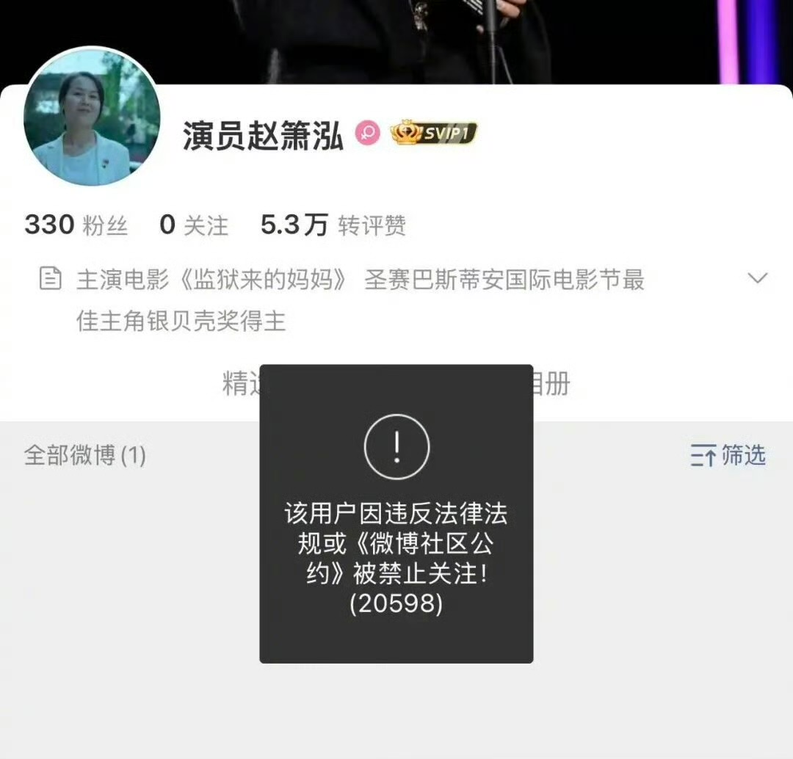
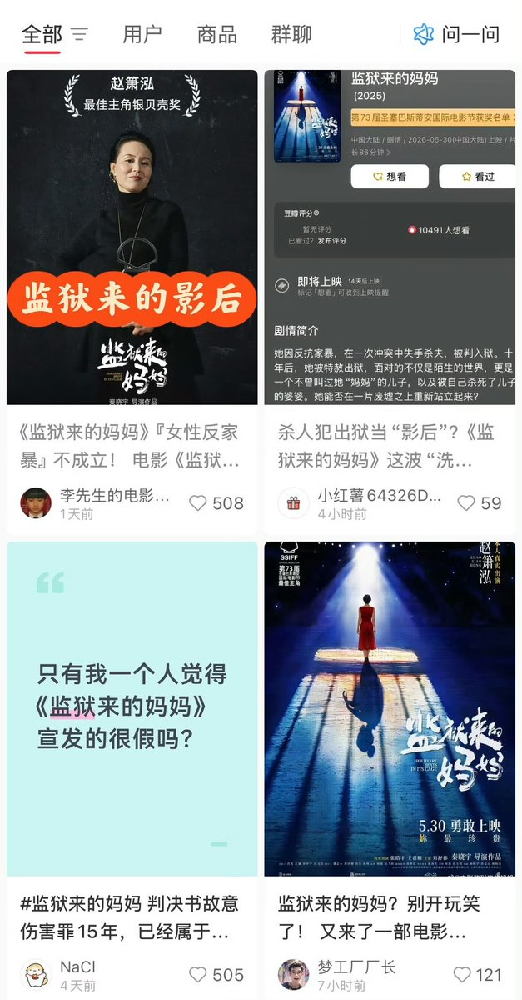
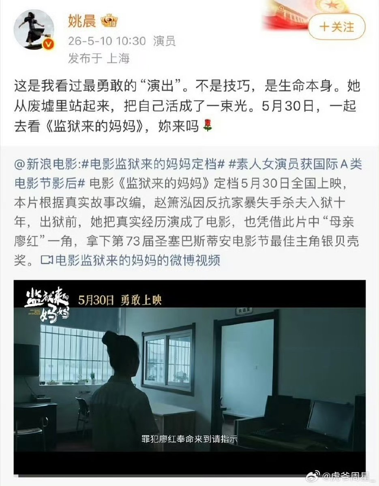

北雁冬翼（simone luxem）🏳️⚧️🏳️🌈🔬
@Simone_Luxem
那么，请问没有“被剥夺政治权利”的公民们，要怎样行使言论自由的政治权利呢？
以及那么如此说的话，就是承认在监狱中的囚犯们说的话，都是“身不由己”的，都是“不自由”的言论咯



李老师不是你老师
@whyyoutouzhele
近日，电影《监狱来的妈妈》定档5月30日全国上映，本片根据真实故事改编，赵箫泓因反抗家暴失手杀夫入狱十年，出狱前，她把真实经历演成了电影，也凭借此片中“母亲廖红”一角，拿下第73届圣塞巴斯蒂安电影节最佳主角银贝壳奖。 https://t.co/BUfgoacZnh